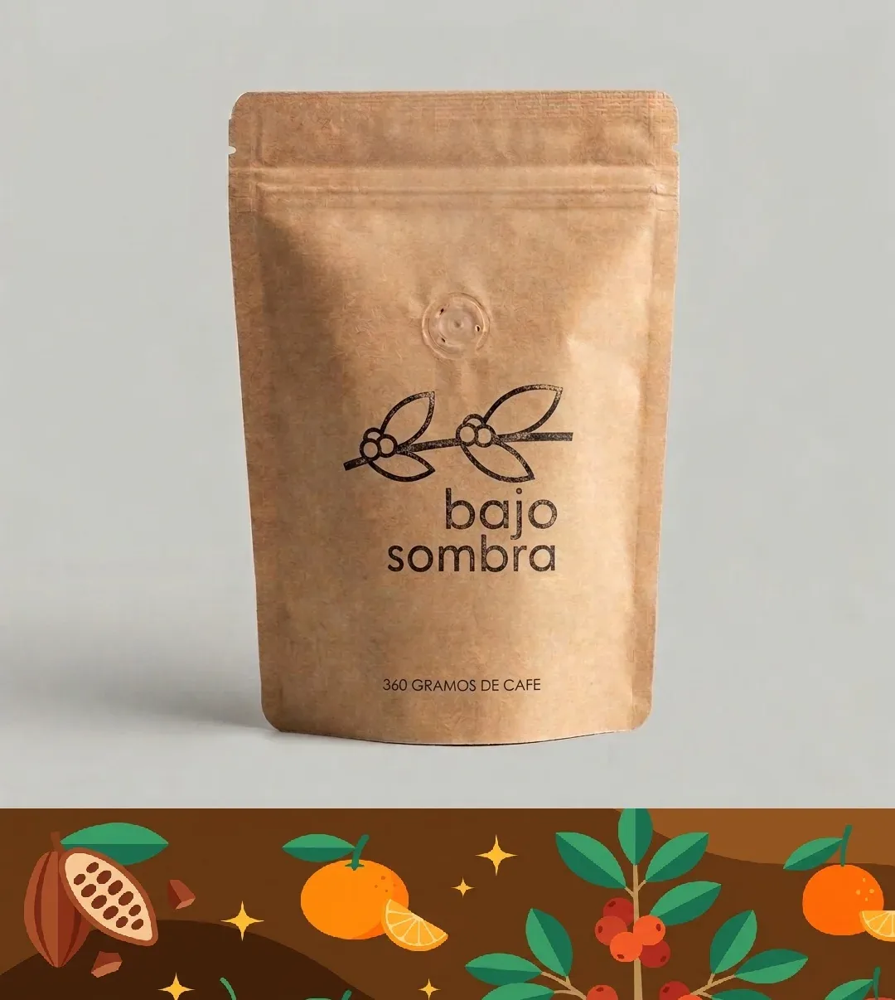
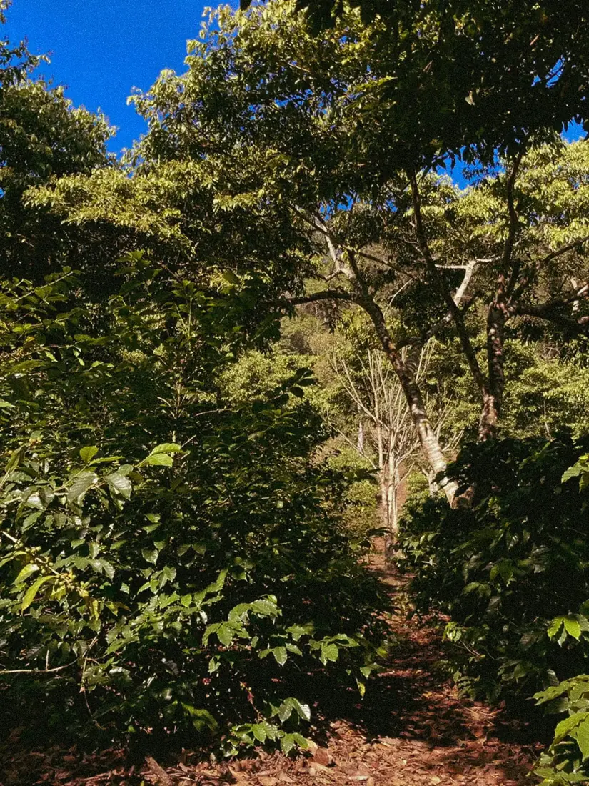
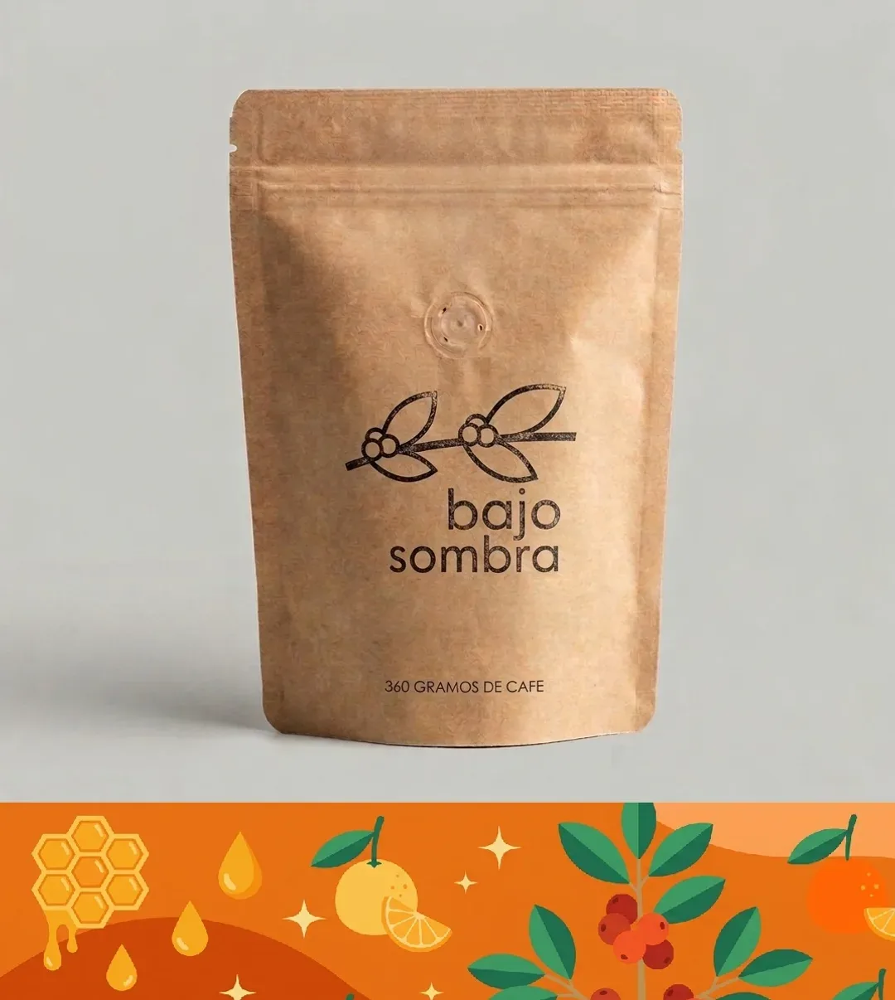
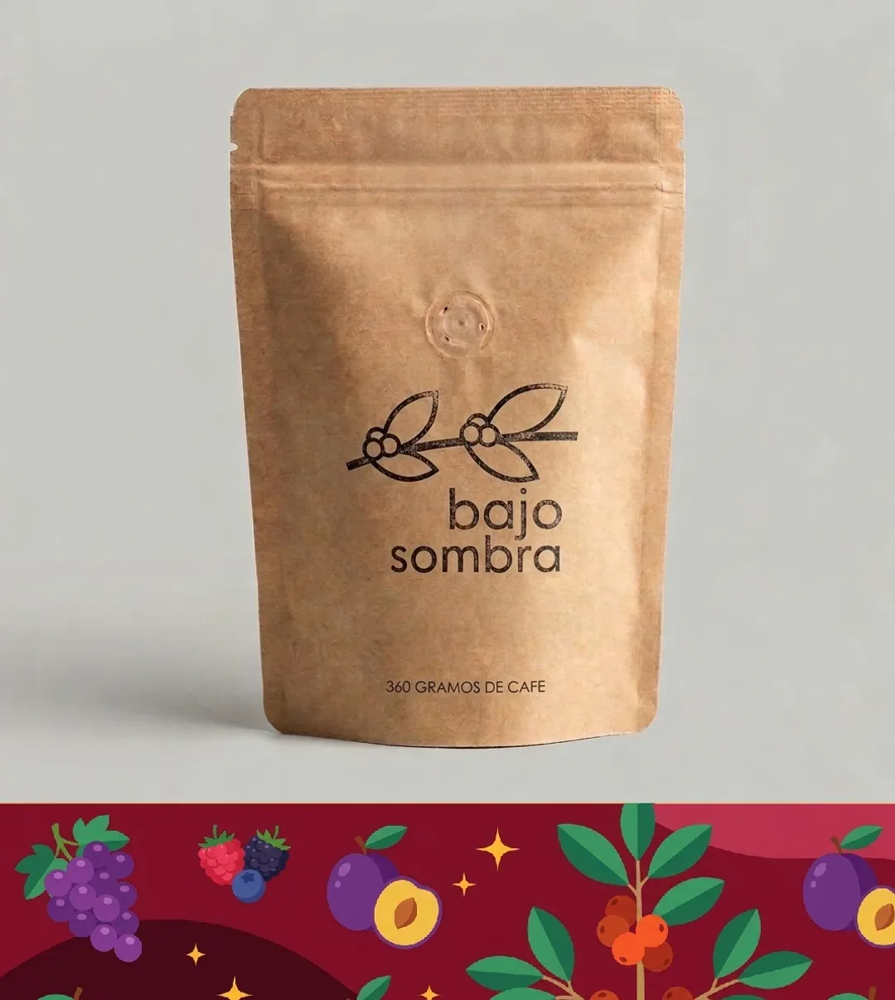

01

Referencia de catálogo
Caturra Cubulco
Lavado de Cubulco, Baja Verapaz; bolsa publicada de 360 g.

Imagen publicada por Bajo SombraCubulco, Honey y Natural. Café guatemalteco con procesos distintos y una molienda elegida para tu forma de prepararlo.
Guarda tus referencias en una lista local y prepara el siguiente paso. Precios, variantes y existencias se revisan en cada ficha oficial.

Lavado de Cubulco, Baja Verapaz; bolsa publicada de 360 g.

Honey de Santa Cruz Verapaz; bolsa publicada de 360 g.

Natural de Santa Cruz Verapaz; bolsa publicada de 360 g.
Vende cafés por origen y molienda, anuncia tueste por pedido y atención a cafeterías, restaurantes y oficinas.
Prueba cantidades y condiciones. Obtén un resumen local para revisar antes de hablar con la empresa.
Datos revisados el 3 de noviembre de 2026. La empresa confirma cualquier condición vigente.
Lavado de Cubulco, Baja Verapaz; bolsa publicada de 360 g.
Honey de Santa Cruz Verapaz; bolsa publicada de 360 g.
Natural de Santa Cruz Verapaz; bolsa publicada de 360 g.
La web indica que tuestan después de recibir el pedido.
El sitio invita a elegir la molienda según la preparación.
Publican atención a cafeterías, restaurantes y oficinas.
Su página de contacto sitúa la operación en Ciudad de Guatemala.
Las fichas las presentan como perfil del café; no se listan como ingredientes añadidos.